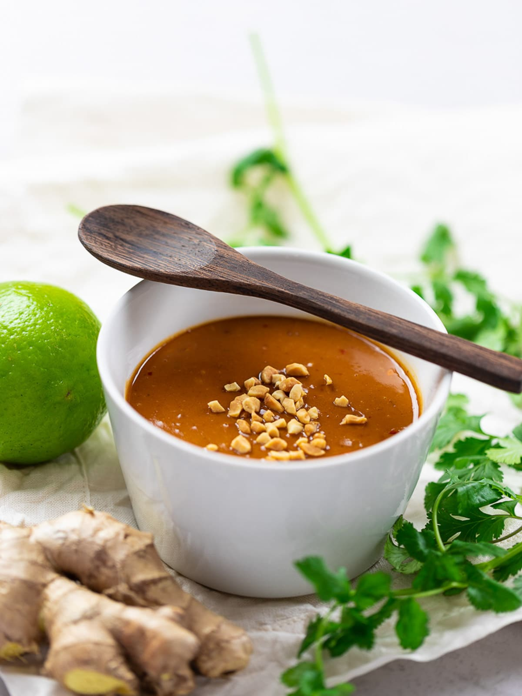

Rocket Butter

Description:
I'm going to share with you my secret recipe for a simple thai peanut sauce that I use
on my Peanut Butter and Jelly Brussels Sprouts. Because it was designed to be used as a base
for the sprouts to lay on, this sauce is a little thicker than more traditional peanut sauces.
This sauce will go great on brussels (obviously) or a simple noodle salad.
Ingredients
- Smooth Peanut Butter: 600 g
- White Miso Paste: 300 g
- Rice Wine Vinegar: 150 g
- Water: 300 g
- Tamari: 150 g
- Sesame Oil: 1 Tablespoon
- Lime Juice: 45 g
Special Equipment
Steps
- In a large mixing bowl, combine miso and peanutbutter and mix together until smooth.
- In a large tupperware combine the vinegar, water, tamari, sesame oil, and lime. Whisk
briefly.
- In splashes, slowly add the wet ingredients into the peanut mixture, stirring or whisking to combine.
- Use immediately, or store in fridge for up to 2 weeks!
Give this simple peanut sauce recipe a try and I bet that no one will guess just how easy it is to make! Bon appetit!